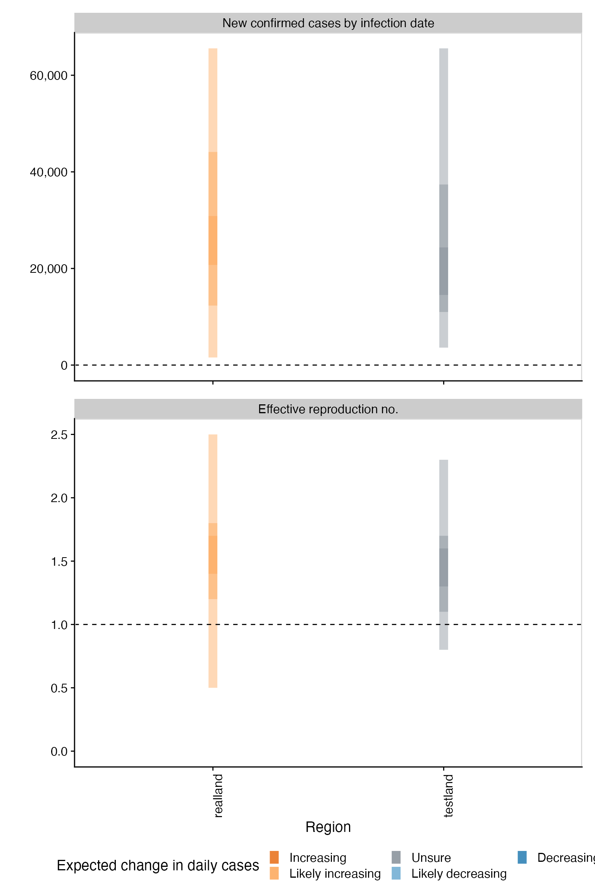
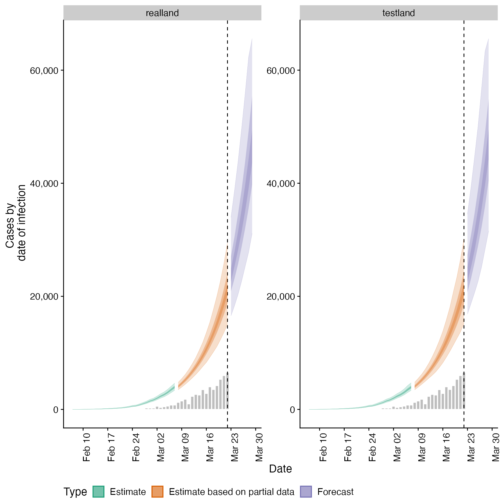
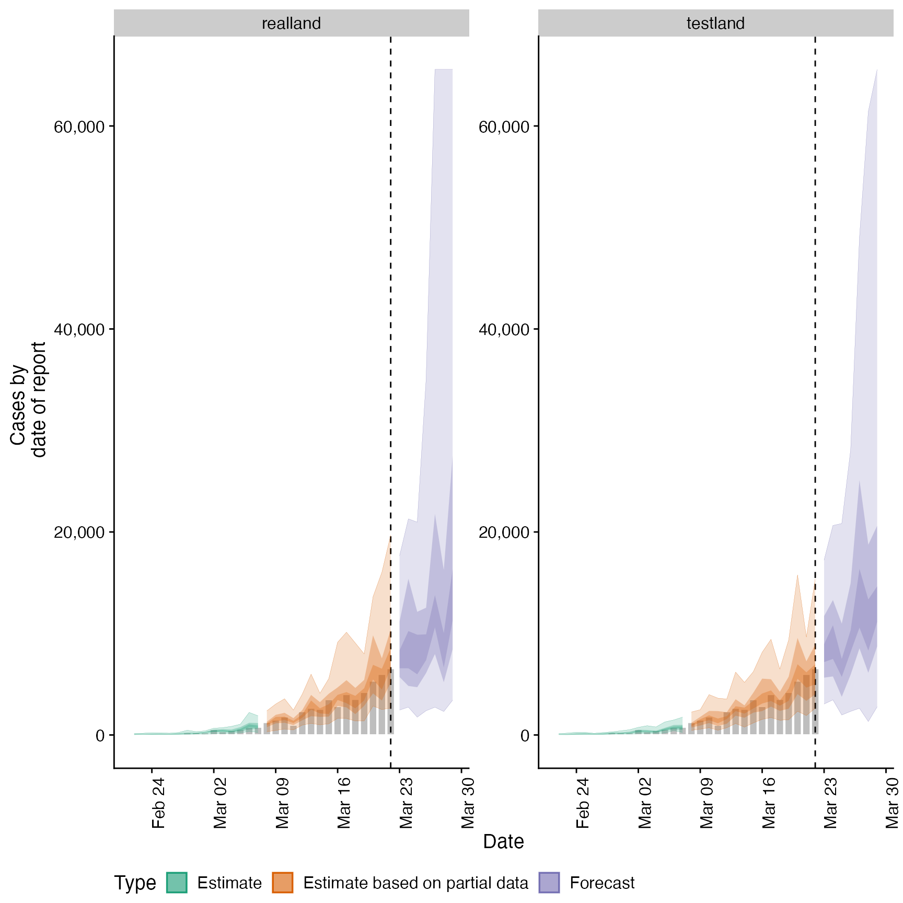
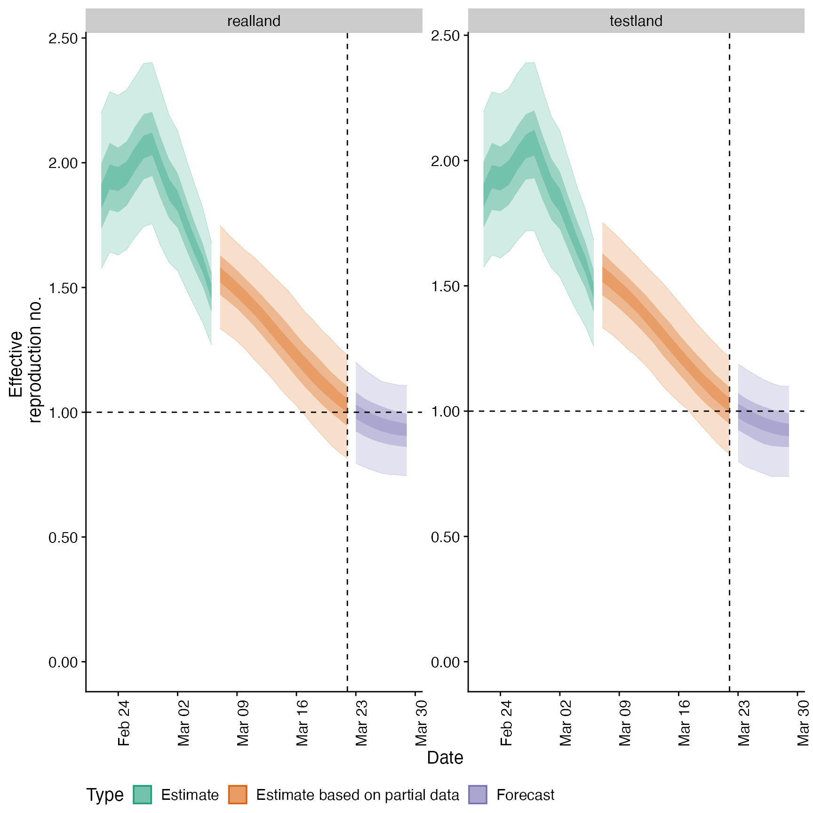
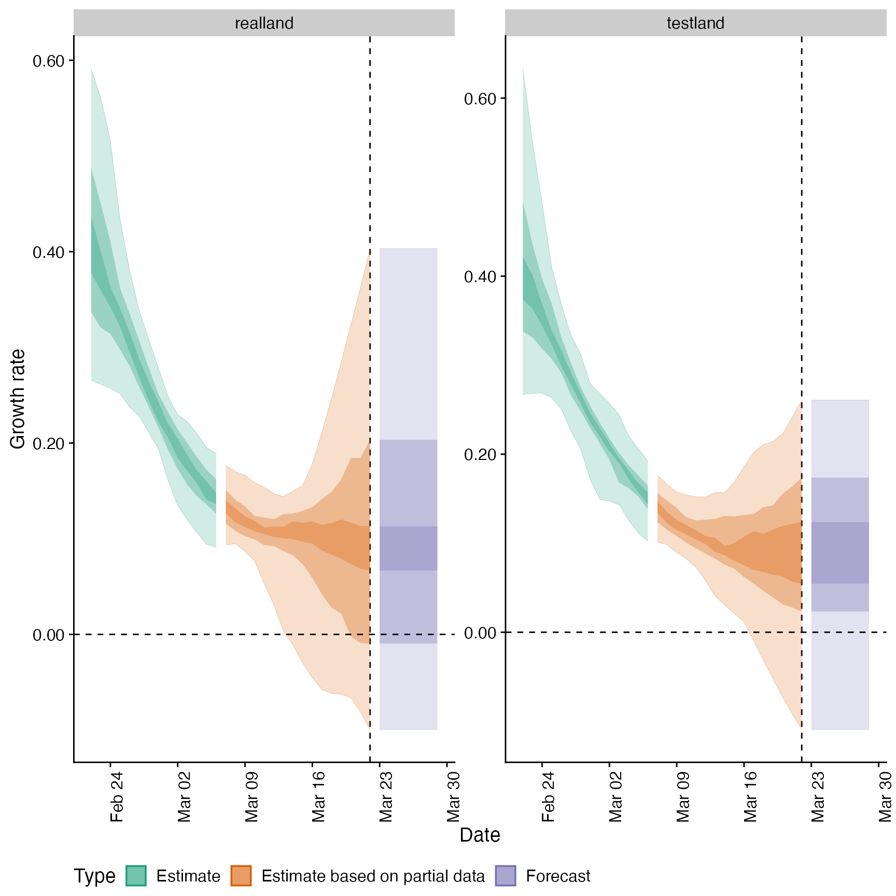
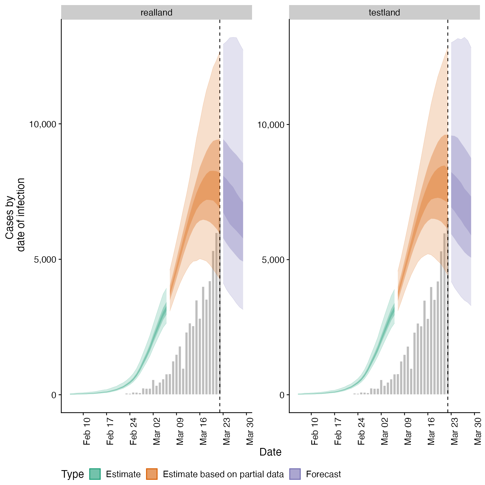
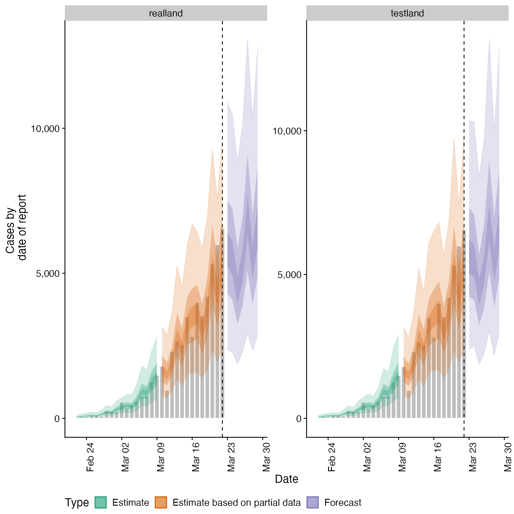
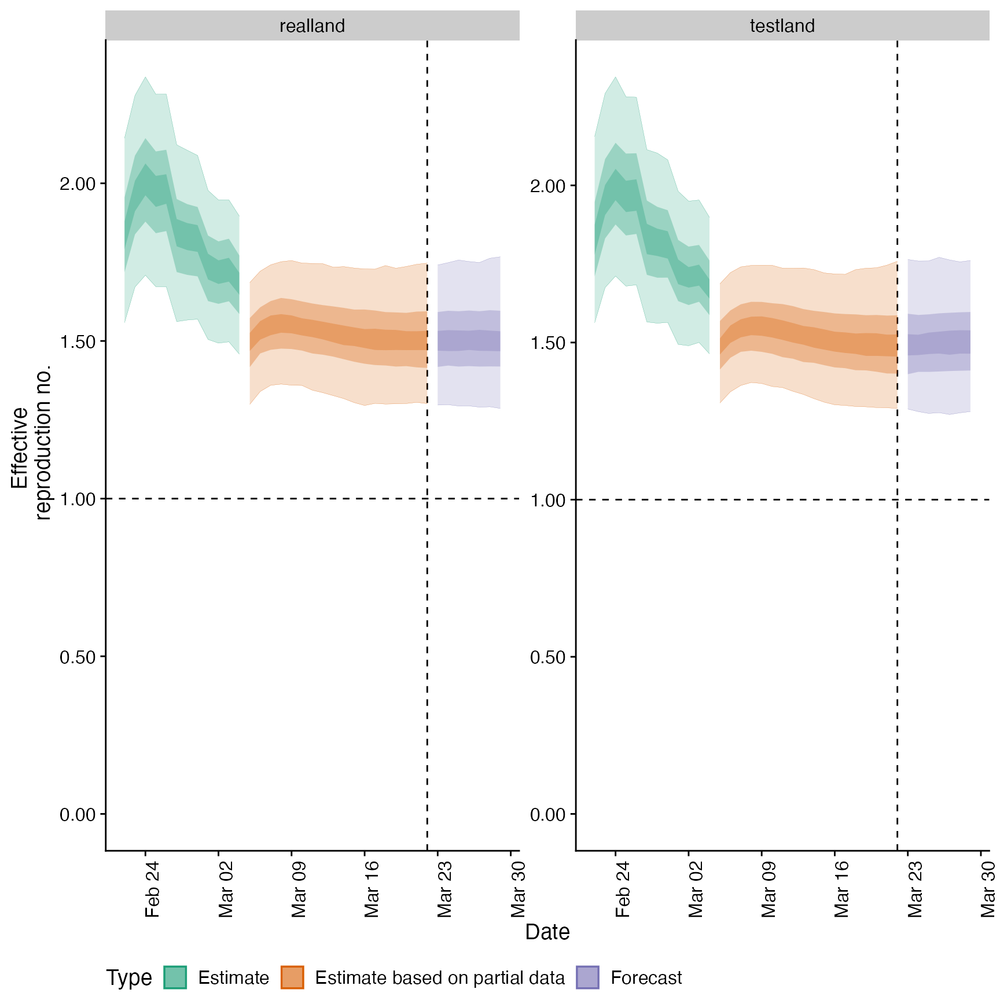
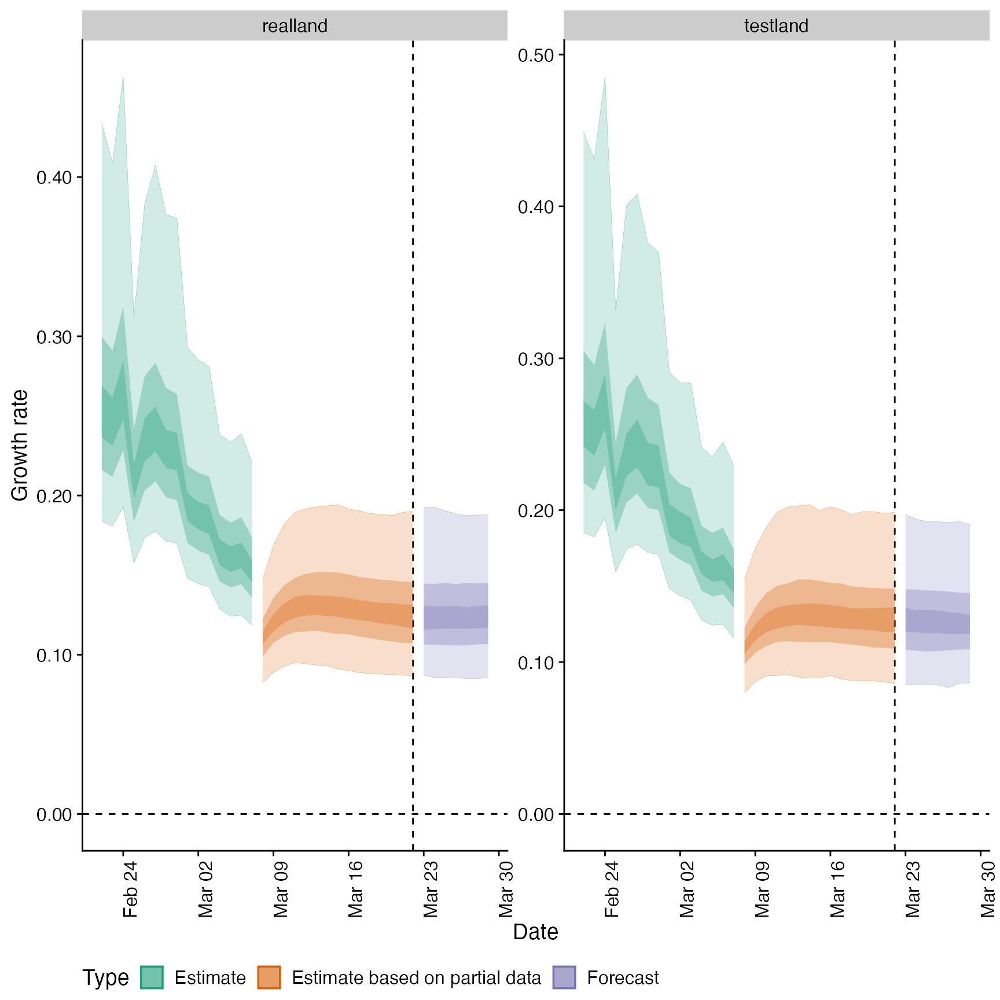

regional_summary.RdGenerate Regional Summary Output
regional_summary( regional_output = NULL, reported_cases, results_dir = NULL, summary_dir = NULL, target_date = NULL, region_scale = "Region", all_regions = TRUE, return_output = FALSE, max_plot = 10 )
| regional_output | A list of output as produced by |
|---|---|
| reported_cases | A data frame of confirmed cases (confirm) by date (date), and region ( |
| results_dir | An optional character string indicating the location of the results directory to extract results from. |
| summary_dir | A character string giving the directory in which to store summary of results. |
| target_date | A character string giving the target date for which to extract results (in the format "yyyy-mm-dd"). Defaults to latest available estimates. |
| region_scale | A character string indicating the name to give the regions being summarised. |
| all_regions | Logical, defaults to |
| return_output | Logical, defaults to FALSE. Should output be returned, this automatically updates to TRUE if no directory for saving is specified. |
| max_plot | Numeric, defaults to 10. A multiplicative upper bound on the number of cases shown on the plot. Based on the maximum number of reported cases. |
A list of summary measures and plots
# \donttest{ # example delays generation_time <- get_generation_time(disease = "SARS-CoV-2", source = "ganyani") incubation_period <- get_incubation_period(disease = "SARS-CoV-2", source = "lauer") reporting_delay <- EpiNow2::bootstrapped_dist_fit(rlnorm(100, log(6), 1), max_value = 30) # example case vector from EpiSoon cases <- EpiNow2::example_confirmed[1:30] cases <- data.table::rbindlist(list( data.table::copy(cases)[, region := "testland"], cases[, region := "realland"])) # run basic nowcasting pipeline out <- regional_epinow(reported_cases = cases, generation_time = generation_time, delays = list(incubation_period, reporting_delay), samples = 50, output = "region", stan_args = list(warmup = 50, control = list(adapt_delta = 0.95)), logs = NULL)#> INFO [2020-11-08 23:41:13] Producing following optional outputs: regions #> INFO [2020-11-08 23:41:13] Reporting estimates using data up to: 2020-03-22 #> INFO [2020-11-08 23:41:13] No target directory specified so returning output #> INFO [2020-11-08 23:41:13] Producing estimates for: testland, realland #> INFO [2020-11-08 23:41:13] Regions excluded: none #> INFO [2020-11-08 23:41:13] Showing progress using progressr. Modify this behaviour using progressr::handlers. #> INFO [2020-11-08 23:41:25] Completed estimates for: testland #> INFO [2020-11-08 23:41:37] Completed estimates for: realland #> INFO [2020-11-08 23:41:37] Completed regional estimates #> INFO [2020-11-08 23:41:37] Regions with estimates: 2 #> INFO [2020-11-08 23:41:37] Regions with runtime errors: 0 #> INFO [2020-11-08 23:41:37] No target directory specified so returning timingsregional_summary(regional_output = out$regional, reported_cases = cases)#> INFO [2020-11-08 23:41:37] No summary directory specified so returning summary output#> $latest_date #> [1] "2020-03-22" #> #> $results #> $results$estimates #> $results$estimates$summarised #> region date variable strat type median #> 1: testland 2020-02-22 R <NA> estimate 2.710584e+00 #> 2: testland 2020-02-23 R <NA> estimate 2.606136e+00 #> 3: testland 2020-02-24 R <NA> estimate 2.490953e+00 #> 4: testland 2020-02-25 R <NA> estimate 2.384246e+00 #> 5: testland 2020-02-26 R <NA> estimate 2.269320e+00 #> --- #> 458: realland 2020-03-26 reported_cases <NA> forecast 7.209500e+03 #> 459: realland 2020-03-27 reported_cases <NA> forecast 1.077250e+04 #> 460: realland 2020-03-28 reported_cases <NA> forecast 9.792500e+03 #> 461: realland 2020-03-29 reported_cases <NA> forecast 1.214650e+04 #> 462: realland <NA> reporting_overdispersion <NA> <NA> 1.363772e-02 #> mean sd lower_90 lower_50 lower_20 #> 1: 2.790604e+00 6.539006e-01 2.120163e+00 2.384428e+00 2.635995e+00 #> 2: 2.640882e+00 4.673909e-01 2.107800e+00 2.394720e+00 2.549221e+00 #> 3: 2.504891e+00 3.310659e-01 2.064494e+00 2.375340e+00 2.457917e+00 #> 4: 2.379427e+00 2.390630e-01 2.020624e+00 2.318425e+00 2.353511e+00 #> 5: 2.262572e+00 1.828959e-01 1.961153e+00 2.219696e+00 2.256379e+00 #> --- #> 458: 1.044560e+04 1.005418e+04 2.667800e+03 4.474000e+03 5.718600e+03 #> 459: 1.820760e+04 2.451030e+04 3.367250e+03 7.058000e+03 8.851600e+03 #> 460: 1.564217e+04 2.096730e+04 2.654500e+03 5.604000e+03 8.242000e+03 #> 461: 2.185506e+04 2.624099e+04 3.208050e+03 6.742500e+03 1.072380e+04 #> 462: 2.319576e-02 2.464094e-02 4.566183e-03 7.294338e-03 1.093383e-02 #> upper_20 upper_50 upper_90 #> 1: 2.762127e+00 3.020791e+00 3.858749e+00 #> 2: 2.637992e+00 2.772804e+00 3.347821e+00 #> 3: 2.517418e+00 2.622838e+00 3.023874e+00 #> 4: 2.407973e+00 2.516671e+00 2.731840e+00 #> 5: 2.293160e+00 2.350141e+00 2.540870e+00 #> --- #> 458: 8.716000e+03 1.079700e+04 3.052680e+04 #> 459: 1.348060e+04 1.864125e+04 5.522035e+04 #> 460: 1.124680e+04 1.459775e+04 6.544330e+04 #> 461: 1.628780e+04 2.275600e+04 7.384160e+04 #> 462: 1.930021e-02 2.675438e-02 7.813004e-02 #> #> #> #> $summarised_results #> $summarised_results$table #> Region New confirmed cases by infection date #> 1: realland 16591 (2640 -- 120230) #> 2: testland 16157 (3004 -- 44982) #> Expected change in daily cases Effective reproduction no. #> 1: Likely increasing 1.4 (0.7 -- 2.8) #> 2: Likely increasing 1.3 (0.6 -- 2) #> Rate of growth Doubling/halving time (days) #> 1: 0.1 (-0.1 -- 0.4) 6.8 (1.7 -- -7) #> 2: 0.09 (-0.11 -- 0.26) 7.7 (2.7 -- -6.4) #> #> $summarised_results$data #> region estimate median mean sd lower_90 lower_50 #> 1: realland 16591 (2640 -- 120230) 16591.0 28381.0 37335.0 2640.0 6602.0 #> 2: testland 16157 (3004 -- 44982) 16157.0 19720.0 14550.0 3004.0 8362.0 #> 3: realland 1.4 (0.7 -- 2.8) 1.4 1.5 0.6 0.7 1.0 #> 4: testland 1.3 (0.6 -- 2) 1.3 1.4 0.4 0.6 1.1 #> lower_20 upper_20 upper_50 upper_90 metric #> 1: 13211.0 19106.0 28692.0 120230.0 New confirmed cases by infection date #> 2: 13911.0 21022.0 28576.0 44982.0 New confirmed cases by infection date #> 3: 1.3 1.4 1.8 2.8 Effective reproduction no. #> 4: 1.2 1.5 1.7 2.0 Effective reproduction no. #> Expected change in daily cases #> 1: Likely increasing #> 2: Likely increasing #> 3: Likely increasing #> 4: Likely increasing #> #> $summarised_results$regions_by_inc #> [1] "realland" "testland" #> #> #> $summary_plot#> #> $summarised_measures #> $summarised_measures$rt #> region date strat type median mean sd #> 1: testland 2020-03-15 <NA> estimate based on partial data 1.32 1.36 0.21 #> 2: testland 2020-03-20 <NA> estimate based on partial data 1.33 1.34 0.37 #> 3: testland 2020-03-16 <NA> estimate based on partial data 1.33 1.35 0.24 #> 4: testland 2020-03-21 <NA> estimate based on partial data 1.33 1.35 0.41 #> 5: testland 2020-03-22 <NA> estimate based on partial data 1.33 1.36 0.44 #> 6: testland 2020-03-23 <NA> forecast 1.33 1.36 0.44 #> 7: testland 2020-03-24 <NA> forecast 1.33 1.36 0.44 #> 8: testland 2020-03-25 <NA> forecast 1.33 1.36 0.44 #> 9: testland 2020-03-26 <NA> forecast 1.33 1.36 0.44 #> 10: testland 2020-03-27 <NA> forecast 1.33 1.36 0.44 #> 11: testland 2020-03-28 <NA> forecast 1.33 1.36 0.44 #> 12: testland 2020-03-29 <NA> forecast 1.33 1.36 0.44 #> 13: testland 2020-03-14 <NA> estimate based on partial data 1.34 1.37 0.17 #> 14: testland 2020-03-17 <NA> estimate based on partial data 1.35 1.34 0.28 #> 15: testland 2020-03-19 <NA> estimate based on partial data 1.36 1.34 0.34 #> 16: testland 2020-03-13 <NA> estimate based on partial data 1.36 1.38 0.14 #> 17: realland 2020-03-20 <NA> estimate based on partial data 1.36 1.41 0.51 #> 18: realland 2020-03-21 <NA> estimate based on partial data 1.36 1.44 0.58 #> 19: realland 2020-03-19 <NA> estimate based on partial data 1.37 1.40 0.45 #> 20: realland 2020-03-22 <NA> estimate based on partial data 1.37 1.46 0.65 #> 21: realland 2020-03-23 <NA> forecast 1.37 1.46 0.65 #> 22: realland 2020-03-24 <NA> forecast 1.37 1.46 0.65 #> 23: realland 2020-03-25 <NA> forecast 1.37 1.46 0.65 #> 24: realland 2020-03-26 <NA> forecast 1.37 1.46 0.65 #> 25: realland 2020-03-27 <NA> forecast 1.37 1.46 0.65 #> 26: realland 2020-03-28 <NA> forecast 1.37 1.46 0.65 #> 27: realland 2020-03-29 <NA> forecast 1.37 1.46 0.65 #> 28: testland 2020-03-18 <NA> estimate based on partial data 1.38 1.34 0.31 #> 29: realland 2020-03-18 <NA> estimate based on partial data 1.39 1.38 0.39 #> 30: realland 2020-03-14 <NA> estimate based on partial data 1.40 1.37 0.19 #> 31: realland 2020-03-16 <NA> estimate based on partial data 1.40 1.37 0.28 #> 32: realland 2020-03-17 <NA> estimate based on partial data 1.40 1.37 0.33 #> 33: testland 2020-03-12 <NA> estimate based on partial data 1.40 1.40 0.11 #> 34: realland 2020-03-12 <NA> estimate based on partial data 1.40 1.40 0.13 #> 35: realland 2020-03-15 <NA> estimate based on partial data 1.41 1.37 0.23 #> 36: realland 2020-03-13 <NA> estimate based on partial data 1.41 1.38 0.16 #> 37: testland 2020-03-11 <NA> estimate based on partial data 1.42 1.42 0.10 #> 38: realland 2020-03-11 <NA> estimate based on partial data 1.42 1.42 0.11 #> 39: realland 2020-03-10 <NA> estimate based on partial data 1.43 1.44 0.10 #> 40: testland 2020-03-10 <NA> estimate based on partial data 1.44 1.44 0.09 #> 41: realland 2020-03-09 <NA> estimate based on partial data 1.45 1.46 0.10 #> 42: testland 2020-03-09 <NA> estimate based on partial data 1.46 1.47 0.09 #> 43: realland 2020-03-08 <NA> estimate based on partial data 1.48 1.49 0.10 #> 44: testland 2020-03-08 <NA> estimate based on partial data 1.50 1.51 0.09 #> 45: realland 2020-03-07 <NA> estimate based on partial data 1.52 1.52 0.12 #> 46: testland 2020-03-07 <NA> estimate based on partial data 1.55 1.54 0.10 #> 47: realland 2020-03-06 <NA> estimate 1.57 1.55 0.13 #> 48: testland 2020-03-06 <NA> estimate 1.59 1.58 0.12 #> 49: realland 2020-03-05 <NA> estimate 1.60 1.59 0.14 #> 50: testland 2020-03-05 <NA> estimate 1.64 1.63 0.13 #> 51: realland 2020-03-04 <NA> estimate 1.64 1.64 0.15 #> 52: testland 2020-03-04 <NA> estimate 1.70 1.68 0.14 #> 53: realland 2020-03-03 <NA> estimate 1.70 1.70 0.14 #> 54: testland 2020-03-03 <NA> estimate 1.75 1.74 0.14 #> 55: realland 2020-03-02 <NA> estimate 1.77 1.77 0.14 #> 56: testland 2020-03-02 <NA> estimate 1.82 1.81 0.14 #> 57: realland 2020-03-01 <NA> estimate 1.85 1.85 0.13 #> 58: testland 2020-03-01 <NA> estimate 1.88 1.88 0.14 #> 59: realland 2020-02-29 <NA> estimate 1.92 1.94 0.13 #> 60: testland 2020-02-29 <NA> estimate 1.97 1.96 0.14 #> 61: realland 2020-02-28 <NA> estimate 2.05 2.05 0.13 #> 62: testland 2020-02-28 <NA> estimate 2.07 2.05 0.14 #> 63: realland 2020-02-27 <NA> estimate 2.16 2.16 0.15 #> 64: testland 2020-02-27 <NA> estimate 2.17 2.15 0.15 #> 65: testland 2020-02-26 <NA> estimate 2.27 2.26 0.18 #> 66: realland 2020-02-26 <NA> estimate 2.27 2.28 0.18 #> 67: testland 2020-02-25 <NA> estimate 2.38 2.38 0.24 #> 68: realland 2020-02-25 <NA> estimate 2.40 2.41 0.23 #> 69: testland 2020-02-24 <NA> estimate 2.49 2.50 0.33 #> 70: realland 2020-02-24 <NA> estimate 2.52 2.54 0.30 #> 71: testland 2020-02-23 <NA> estimate 2.61 2.64 0.47 #> 72: realland 2020-02-23 <NA> estimate 2.63 2.66 0.40 #> 73: testland 2020-02-22 <NA> estimate 2.71 2.79 0.65 #> 74: realland 2020-02-22 <NA> estimate 2.74 2.79 0.52 #> region date strat type median mean sd #> lower_90 lower_50 lower_20 upper_20 upper_50 upper_90 #> 1: 1.08 1.26 1.31 1.38 1.49 1.66 #> 2: 0.75 1.11 1.24 1.44 1.61 1.94 #> 3: 1.05 1.23 1.28 1.40 1.48 1.75 #> 4: 0.68 1.10 1.21 1.46 1.65 1.96 #> 5: 0.63 1.09 1.21 1.46 1.69 2.05 #> 6: 0.63 1.09 1.21 1.46 1.69 2.05 #> 7: 0.63 1.09 1.21 1.46 1.69 2.05 #> 8: 0.63 1.09 1.21 1.46 1.69 2.05 #> 9: 0.63 1.09 1.21 1.46 1.69 2.05 #> 10: 0.63 1.09 1.21 1.46 1.69 2.05 #> 11: 0.63 1.09 1.21 1.46 1.69 2.05 #> 12: 0.63 1.09 1.21 1.46 1.69 2.05 #> 13: 1.11 1.29 1.33 1.38 1.49 1.62 #> 14: 0.97 1.21 1.26 1.43 1.48 1.79 #> 15: 0.82 1.15 1.24 1.43 1.53 1.90 #> 16: 1.15 1.32 1.34 1.39 1.49 1.63 #> 17: 0.77 0.99 1.29 1.45 1.72 2.44 #> 18: 0.72 0.97 1.27 1.45 1.73 2.64 #> 19: 0.78 1.08 1.31 1.45 1.65 2.24 #> 20: 0.67 0.96 1.26 1.43 1.79 2.84 #> 21: 0.67 0.96 1.26 1.43 1.79 2.84 #> 22: 0.67 0.96 1.26 1.43 1.79 2.84 #> 23: 0.67 0.96 1.26 1.43 1.79 2.84 #> 24: 0.67 0.96 1.26 1.43 1.79 2.84 #> 25: 0.67 0.96 1.26 1.43 1.79 2.84 #> 26: 0.67 0.96 1.26 1.43 1.79 2.84 #> 27: 0.67 0.96 1.26 1.43 1.79 2.84 #> 28: 0.89 1.17 1.25 1.41 1.53 1.83 #> 29: 0.78 1.10 1.32 1.43 1.61 2.06 #> 30: 0.96 1.32 1.38 1.44 1.50 1.60 #> 31: 0.84 1.22 1.36 1.45 1.51 1.74 #> 32: 0.79 1.15 1.35 1.42 1.55 1.89 #> 33: 1.22 1.34 1.38 1.41 1.47 1.57 #> 34: 1.11 1.35 1.38 1.43 1.49 1.59 #> 35: 0.89 1.29 1.37 1.45 1.50 1.65 #> 36: 1.01 1.34 1.38 1.44 1.49 1.56 #> 37: 1.27 1.36 1.40 1.44 1.46 1.57 #> 38: 1.20 1.35 1.40 1.43 1.48 1.60 #> 39: 1.30 1.38 1.41 1.46 1.49 1.61 #> 40: 1.31 1.39 1.41 1.46 1.48 1.60 #> 41: 1.33 1.39 1.43 1.47 1.51 1.65 #> 42: 1.34 1.42 1.44 1.48 1.52 1.61 #> 43: 1.36 1.41 1.45 1.50 1.57 1.66 #> 44: 1.38 1.43 1.49 1.52 1.57 1.62 #> 45: 1.36 1.45 1.49 1.55 1.61 1.67 #> 46: 1.39 1.47 1.53 1.56 1.60 1.67 #> 47: 1.36 1.48 1.53 1.58 1.65 1.72 #> 48: 1.40 1.53 1.57 1.60 1.65 1.73 #> 49: 1.38 1.52 1.56 1.62 1.68 1.78 #> 50: 1.43 1.58 1.63 1.65 1.68 1.79 #> 51: 1.42 1.56 1.61 1.67 1.73 1.86 #> 52: 1.49 1.62 1.67 1.71 1.75 1.88 #> 53: 1.50 1.61 1.67 1.73 1.80 1.89 #> 54: 1.57 1.68 1.74 1.78 1.82 1.96 #> 55: 1.55 1.67 1.74 1.80 1.84 1.96 #> 56: 1.58 1.74 1.80 1.84 1.89 2.02 #> 57: 1.64 1.76 1.80 1.87 1.92 2.03 #> 58: 1.58 1.82 1.87 1.92 1.96 2.05 #> 59: 1.76 1.86 1.89 1.97 2.00 2.14 #> 60: 1.67 1.89 1.95 2.00 2.04 2.18 #> 61: 1.86 1.95 2.00 2.08 2.13 2.27 #> 62: 1.84 1.97 2.04 2.09 2.15 2.26 #> 63: 1.96 2.02 2.12 2.20 2.28 2.40 #> 64: 1.89 2.09 2.16 2.19 2.23 2.35 #> 65: 1.96 2.22 2.26 2.29 2.35 2.54 #> 66: 2.01 2.14 2.22 2.36 2.42 2.58 #> 67: 2.02 2.32 2.35 2.41 2.52 2.73 #> 68: 2.06 2.25 2.35 2.44 2.59 2.78 #> 69: 2.06 2.38 2.46 2.52 2.62 3.02 #> 70: 2.11 2.33 2.45 2.57 2.79 3.03 #> 71: 2.11 2.39 2.55 2.64 2.77 3.35 #> 72: 2.14 2.34 2.55 2.71 2.97 3.28 #> 73: 2.12 2.38 2.64 2.76 3.02 3.86 #> 74: 2.13 2.45 2.63 2.88 3.10 3.51 #> lower_90 lower_50 lower_20 upper_20 upper_50 upper_90 #> #> $summarised_measures$growth_rate #> region date strat type median mean sd #> 1: testland 2020-03-16 <NA> estimate based on partial data 0.084 0.091 0.064 #> 2: testland 2020-03-15 <NA> estimate based on partial data 0.085 0.094 0.054 #> 3: testland 2020-03-20 <NA> estimate based on partial data 0.088 0.087 0.098 #> 4: testland 2020-03-21 <NA> estimate based on partial data 0.090 0.088 0.106 #> 5: testland 2020-03-17 <NA> estimate based on partial data 0.090 0.089 0.073 #> 6: testland 2020-03-22 <NA> estimate based on partial data 0.090 0.090 0.115 #> 7: testland 2020-03-23 <NA> forecast 0.090 0.090 0.115 #> 8: testland 2020-03-24 <NA> forecast 0.090 0.090 0.115 #> 9: testland 2020-03-25 <NA> forecast 0.090 0.090 0.115 #> 10: testland 2020-03-26 <NA> forecast 0.090 0.090 0.115 #> 11: testland 2020-03-27 <NA> forecast 0.090 0.090 0.115 #> 12: testland 2020-03-28 <NA> forecast 0.090 0.090 0.115 #> 13: testland 2020-03-29 <NA> forecast 0.090 0.090 0.115 #> 14: testland 2020-03-14 <NA> estimate based on partial data 0.092 0.097 0.045 #> 15: testland 2020-03-19 <NA> estimate based on partial data 0.093 0.087 0.090 #> 16: testland 2020-03-13 <NA> estimate based on partial data 0.095 0.101 0.036 #> 17: testland 2020-03-18 <NA> estimate based on partial data 0.097 0.088 0.081 #> 18: realland 2020-03-21 <NA> estimate based on partial data 0.098 0.105 0.138 #> 19: realland 2020-03-20 <NA> estimate based on partial data 0.100 0.101 0.124 #> 20: realland 2020-03-22 <NA> estimate based on partial data 0.101 0.109 0.153 #> 21: realland 2020-03-23 <NA> forecast 0.101 0.109 0.153 #> 22: realland 2020-03-24 <NA> forecast 0.101 0.109 0.153 #> 23: realland 2020-03-25 <NA> forecast 0.101 0.109 0.153 #> 24: realland 2020-03-26 <NA> forecast 0.101 0.109 0.153 #> 25: realland 2020-03-27 <NA> forecast 0.101 0.109 0.153 #> 26: realland 2020-03-28 <NA> forecast 0.101 0.109 0.153 #> 27: realland 2020-03-29 <NA> forecast 0.101 0.109 0.153 #> 28: realland 2020-03-19 <NA> estimate based on partial data 0.103 0.098 0.110 #> 29: testland 2020-03-12 <NA> estimate based on partial data 0.103 0.105 0.029 #> 30: realland 2020-03-18 <NA> estimate based on partial data 0.105 0.096 0.097 #> 31: realland 2020-03-17 <NA> estimate based on partial data 0.106 0.094 0.084 #> 32: realland 2020-03-14 <NA> estimate based on partial data 0.106 0.096 0.049 #> 33: realland 2020-03-12 <NA> estimate based on partial data 0.107 0.103 0.034 #> 34: realland 2020-03-15 <NA> estimate based on partial data 0.108 0.095 0.059 #> 35: realland 2020-03-16 <NA> estimate based on partial data 0.109 0.094 0.071 #> 36: realland 2020-03-13 <NA> estimate based on partial data 0.109 0.099 0.040 #> 37: testland 2020-03-11 <NA> estimate based on partial data 0.109 0.110 0.025 #> 38: realland 2020-03-11 <NA> estimate based on partial data 0.110 0.108 0.029 #> 39: realland 2020-03-10 <NA> estimate based on partial data 0.114 0.114 0.025 #> 40: testland 2020-03-10 <NA> estimate based on partial data 0.118 0.117 0.022 #> 41: realland 2020-03-09 <NA> estimate based on partial data 0.118 0.120 0.024 #> 42: testland 2020-03-09 <NA> estimate based on partial data 0.123 0.124 0.022 #> 43: realland 2020-03-08 <NA> estimate based on partial data 0.124 0.127 0.026 #> 44: testland 2020-03-08 <NA> estimate based on partial data 0.130 0.132 0.024 #> 45: realland 2020-03-07 <NA> estimate based on partial data 0.136 0.134 0.029 #> 46: testland 2020-03-07 <NA> estimate based on partial data 0.139 0.141 0.026 #> 47: realland 2020-03-06 <NA> estimate 0.142 0.142 0.032 #> 48: testland 2020-03-06 <NA> estimate 0.151 0.151 0.030 #> 49: realland 2020-03-05 <NA> estimate 0.155 0.152 0.034 #> 50: testland 2020-03-05 <NA> estimate 0.164 0.162 0.032 #> 51: realland 2020-03-04 <NA> estimate 0.164 0.163 0.035 #> 52: testland 2020-03-04 <NA> estimate 0.178 0.175 0.034 #> 53: realland 2020-03-03 <NA> estimate 0.178 0.177 0.034 #> 54: testland 2020-03-03 <NA> estimate 0.192 0.189 0.035 #> 55: realland 2020-03-02 <NA> estimate 0.197 0.193 0.032 #> 56: testland 2020-03-02 <NA> estimate 0.207 0.204 0.034 #> 57: realland 2020-03-01 <NA> estimate 0.213 0.212 0.030 #> 58: testland 2020-03-01 <NA> estimate 0.223 0.221 0.033 #> 59: realland 2020-02-29 <NA> estimate 0.238 0.233 0.029 #> 60: testland 2020-02-29 <NA> estimate 0.243 0.240 0.031 #> 61: realland 2020-02-28 <NA> estimate 0.253 0.258 0.031 #> 62: testland 2020-02-28 <NA> estimate 0.264 0.261 0.031 #> 63: realland 2020-02-27 <NA> estimate 0.277 0.284 0.036 #> 64: testland 2020-02-27 <NA> estimate 0.283 0.284 0.033 #> 65: testland 2020-02-26 <NA> estimate 0.305 0.308 0.039 #> 66: realland 2020-02-26 <NA> estimate 0.307 0.311 0.045 #> 67: testland 2020-02-25 <NA> estimate 0.330 0.333 0.052 #> 68: realland 2020-02-25 <NA> estimate 0.331 0.338 0.058 #> 69: testland 2020-02-24 <NA> estimate 0.354 0.360 0.071 #> 70: realland 2020-02-24 <NA> estimate 0.354 0.365 0.074 #> 71: testland 2020-02-23 <NA> estimate 0.371 0.388 0.099 #> 72: realland 2020-02-23 <NA> estimate 0.382 0.392 0.094 #> 73: testland 2020-02-22 <NA> estimate 0.395 0.418 0.136 #> 74: realland 2020-02-22 <NA> estimate 0.409 0.419 0.120 #> region date strat type median mean sd #> lower_90 lower_50 lower_20 upper_20 upper_50 upper_90 #> 1: 0.012 0.062 0.075 0.107 0.132 0.186 #> 2: 0.021 0.071 0.080 0.100 0.130 0.169 #> 3: -0.072 0.031 0.063 0.119 0.156 0.223 #> 4: -0.092 0.028 0.057 0.122 0.164 0.241 #> 5: -0.010 0.055 0.070 0.113 0.133 0.202 #> 6: -0.109 0.023 0.054 0.124 0.174 0.261 #> 7: -0.109 0.023 0.054 0.124 0.174 0.261 #> 8: -0.109 0.023 0.054 0.124 0.174 0.261 #> 9: -0.109 0.023 0.054 0.124 0.174 0.261 #> 10: -0.109 0.023 0.054 0.124 0.174 0.261 #> 11: -0.109 0.023 0.054 0.124 0.174 0.261 #> 12: -0.109 0.023 0.054 0.124 0.174 0.261 #> 13: -0.109 0.023 0.054 0.124 0.174 0.261 #> 14: 0.030 0.076 0.086 0.097 0.131 0.157 #> 15: -0.052 0.039 0.064 0.115 0.142 0.214 #> 16: 0.041 0.082 0.090 0.106 0.127 0.157 #> 17: -0.031 0.046 0.068 0.111 0.141 0.211 #> 18: -0.081 -0.009 0.069 0.113 0.184 0.362 #> 19: -0.066 -0.002 0.074 0.117 0.184 0.323 #> 20: -0.099 -0.010 0.067 0.113 0.203 0.403 #> 21: -0.099 -0.010 0.067 0.113 0.203 0.403 #> 22: -0.099 -0.010 0.067 0.113 0.203 0.403 #> 23: -0.099 -0.010 0.067 0.113 0.203 0.403 #> 24: -0.099 -0.010 0.067 0.113 0.203 0.403 #> 25: -0.099 -0.010 0.067 0.113 0.203 0.403 #> 26: -0.099 -0.010 0.067 0.113 0.203 0.403 #> 27: -0.099 -0.010 0.067 0.113 0.203 0.403 #> 28: -0.063 0.022 0.079 0.120 0.162 0.285 #> 29: 0.058 0.088 0.099 0.108 0.126 0.152 #> 30: -0.062 0.028 0.083 0.116 0.149 0.247 #> 31: -0.058 0.042 0.088 0.115 0.141 0.211 #> 32: -0.011 0.083 0.100 0.118 0.126 0.150 #> 33: 0.031 0.092 0.102 0.113 0.120 0.147 #> 34: -0.030 0.073 0.097 0.117 0.129 0.155 #> 35: -0.045 0.059 0.095 0.118 0.133 0.178 #> 36: 0.004 0.087 0.100 0.112 0.126 0.144 #> 37: 0.073 0.094 0.104 0.114 0.126 0.152 #> 38: 0.053 0.093 0.105 0.112 0.122 0.154 #> 39: 0.077 0.099 0.108 0.119 0.124 0.159 #> 40: 0.083 0.101 0.110 0.120 0.129 0.154 #> 41: 0.087 0.103 0.112 0.123 0.134 0.166 #> 42: 0.090 0.108 0.115 0.126 0.139 0.157 #> 43: 0.095 0.108 0.117 0.132 0.141 0.170 #> 44: 0.098 0.115 0.123 0.135 0.148 0.166 #> 45: 0.093 0.116 0.127 0.140 0.151 0.176 #> 46: 0.102 0.124 0.134 0.148 0.156 0.176 #> 47: 0.091 0.126 0.136 0.148 0.162 0.189 #> 48: 0.102 0.138 0.144 0.157 0.165 0.192 #> 49: 0.094 0.136 0.141 0.160 0.172 0.195 #> 50: 0.112 0.152 0.157 0.168 0.176 0.207 #> 51: 0.107 0.144 0.158 0.171 0.185 0.210 #> 52: 0.126 0.162 0.172 0.182 0.188 0.221 #> 53: 0.120 0.156 0.171 0.188 0.200 0.222 #> 54: 0.143 0.168 0.190 0.196 0.201 0.244 #> 55: 0.135 0.173 0.184 0.205 0.214 0.230 #> 56: 0.147 0.194 0.203 0.213 0.218 0.257 #> 57: 0.161 0.193 0.205 0.220 0.232 0.249 #> 58: 0.149 0.212 0.220 0.230 0.236 0.268 #> 59: 0.194 0.216 0.222 0.243 0.251 0.278 #> 60: 0.172 0.230 0.236 0.246 0.254 0.279 #> 61: 0.211 0.238 0.244 0.264 0.279 0.308 #> 62: 0.206 0.249 0.257 0.269 0.276 0.313 #> 63: 0.228 0.258 0.269 0.288 0.307 0.338 #> 64: 0.226 0.266 0.278 0.292 0.303 0.334 #> 65: 0.251 0.291 0.299 0.317 0.331 0.368 #> 66: 0.238 0.280 0.295 0.316 0.335 0.381 #> 67: 0.263 0.307 0.323 0.339 0.369 0.410 #> 68: 0.252 0.298 0.322 0.341 0.362 0.434 #> 69: 0.269 0.319 0.344 0.369 0.397 0.482 #> 70: 0.257 0.314 0.342 0.364 0.411 0.516 #> 71: 0.269 0.331 0.363 0.402 0.436 0.551 #> 72: 0.261 0.320 0.360 0.400 0.450 0.561 #> 73: 0.267 0.338 0.374 0.422 0.484 0.633 #> 74: 0.266 0.337 0.378 0.438 0.488 0.591 #> lower_90 lower_50 lower_20 upper_20 upper_50 upper_90 #> #> $summarised_measures$cases_by_infection #> region date strat type median mean sd lower_90 lower_50 #> 1: realland 2020-02-06 <NA> estimate 79 82 14 67 73 #> 2: realland 2020-02-07 <NA> estimate 79 83 13 69 74 #> 3: realland 2020-02-08 <NA> estimate 81 84 12 70 75 #> 4: realland 2020-02-09 <NA> estimate 82 84 11 71 76 #> 5: realland 2020-02-10 <NA> estimate 83 85 11 72 77 #> --- #> 102: realland 2020-03-27 <NA> forecast 26438 124636 276622 1780 5964 #> 103: testland 2020-03-28 <NA> forecast 26740 55690 78966 1661 9377 #> 104: testland 2020-03-29 <NA> forecast 28758 67842 105246 1502 9597 #> 105: realland 2020-03-28 <NA> forecast 29014 174394 412590 1645 5775 #> 106: realland 2020-03-29 <NA> forecast 31841 246325 615612 1519 5592 #> lower_20 upper_20 upper_50 upper_90 #> 1: 76 83 89 106 #> 2: 76 84 89 105 #> 3: 77 84 90 105 #> 4: 80 84 92 105 #> 5: 81 87 92 105 #> --- #> 102: 17926 32840 70875 818267 #> 103: 19425 38912 70646 196765 #> 104: 20346 42989 82403 250764 #> 105: 19095 36735 84447 1201256 #> 106: 20356 41095 100693 1760525 #> #> $summarised_measures$cases_by_report #> region date strat type median mean sd #> 1: testland 2020-02-22 <NA> estimate 58 63 22 #> 2: realland 2020-02-22 <NA> estimate 62 65 37 #> 3: testland 2020-02-23 <NA> estimate 67 72 37 #> 4: testland 2020-02-26 <NA> estimate 74 83 44 #> 5: realland 2020-02-23 <NA> estimate 78 83 32 #> 6: realland 2020-02-25 <NA> estimate 81 86 38 #> 7: realland 2020-02-26 <NA> estimate 84 86 37 #> 8: realland 2020-02-24 <NA> estimate 84 90 44 #> 9: testland 2020-02-24 <NA> estimate 86 92 45 #> 10: testland 2020-02-25 <NA> estimate 86 94 42 #> 11: realland 2020-02-27 <NA> estimate 97 104 38 #> 12: testland 2020-02-27 <NA> estimate 106 113 58 #> 13: testland 2020-02-28 <NA> estimate 165 188 80 #> 14: testland 2020-02-29 <NA> estimate 172 172 71 #> 15: realland 2020-02-29 <NA> estimate 174 198 101 #> 16: realland 2020-02-28 <NA> estimate 196 211 87 #> 17: testland 2020-03-01 <NA> estimate 238 251 112 #> 18: realland 2020-03-01 <NA> estimate 313 319 143 #> 19: testland 2020-03-02 <NA> estimate 346 370 163 #> 20: realland 2020-03-02 <NA> estimate 351 377 162 #> 21: testland 2020-03-03 <NA> estimate 420 460 224 #> 22: realland 2020-03-04 <NA> estimate 420 469 254 #> 23: realland 2020-03-03 <NA> estimate 432 435 165 #> 24: testland 2020-03-04 <NA> estimate 472 483 240 #> 25: realland 2020-03-05 <NA> estimate 563 622 255 #> 26: testland 2020-03-05 <NA> estimate 576 616 289 #> 27: testland 2020-03-07 <NA> estimate based on partial data 798 864 399 #> 28: realland 2020-03-07 <NA> estimate based on partial data 876 970 461 #> 29: realland 2020-03-06 <NA> estimate 924 995 453 #> 30: testland 2020-03-06 <NA> estimate 982 983 386 #> 31: testland 2020-03-08 <NA> estimate based on partial data 1182 1139 372 #> 32: realland 2020-03-08 <NA> estimate based on partial data 1238 1199 529 #> 33: realland 2020-03-09 <NA> estimate based on partial data 1285 1399 565 #> 34: testland 2020-03-09 <NA> estimate based on partial data 1416 1570 525 #> 35: testland 2020-03-11 <NA> estimate based on partial data 1465 1462 543 #> 36: realland 2020-03-10 <NA> estimate based on partial data 1616 1647 674 #> 37: testland 2020-03-10 <NA> estimate based on partial data 1653 1800 685 #> 38: realland 2020-03-11 <NA> estimate based on partial data 1656 1686 756 #> 39: testland 2020-03-12 <NA> estimate based on partial data 1788 1921 783 #> 40: realland 2020-03-12 <NA> estimate based on partial data 1898 1946 789 #> 41: testland 2020-03-14 <NA> estimate based on partial data 2056 2439 1176 #> 42: realland 2020-03-14 <NA> estimate based on partial data 2426 2562 1161 #> 43: testland 2020-03-13 <NA> estimate based on partial data 2626 2866 1263 #> 44: testland 2020-03-15 <NA> estimate based on partial data 2940 3222 1724 #> 45: realland 2020-03-13 <NA> estimate based on partial data 3016 2936 1122 #> 46: testland 2020-03-18 <NA> estimate based on partial data 3222 3560 1397 #> 47: realland 2020-03-15 <NA> estimate based on partial data 3410 3611 1512 #> 48: testland 2020-03-16 <NA> estimate based on partial data 3425 4381 2372 #> 49: realland 2020-03-18 <NA> estimate based on partial data 3463 3695 1406 #> 50: realland 2020-03-16 <NA> estimate based on partial data 3549 3785 1988 #> 51: testland 2020-03-17 <NA> estimate based on partial data 3678 3944 1541 #> 52: testland 2020-03-19 <NA> estimate based on partial data 3870 3895 1582 #> 53: realland 2020-03-17 <NA> estimate based on partial data 3890 4006 1647 #> 54: realland 2020-03-19 <NA> estimate based on partial data 4132 4048 1385 #> 55: testland 2020-03-21 <NA> estimate based on partial data 4734 5229 2307 #> 56: realland 2020-03-21 <NA> estimate based on partial data 4830 5284 2412 #> 57: testland 2020-03-22 <NA> estimate based on partial data 5538 5755 2837 #> 58: testland 2020-03-20 <NA> estimate based on partial data 5615 6039 2704 #> 59: testland 2020-03-25 <NA> forecast 5750 7040 3685 #> 60: realland 2020-03-20 <NA> estimate based on partial data 5930 6608 3320 #> 61: realland 2020-03-24 <NA> forecast 6243 8630 6560 #> 62: realland 2020-03-25 <NA> forecast 6448 8581 7633 #> 63: realland 2020-03-22 <NA> estimate based on partial data 6597 7484 3837 #> 64: realland 2020-03-26 <NA> forecast 7210 10446 10054 #> 65: testland 2020-03-24 <NA> forecast 7679 8720 4687 #> 66: realland 2020-03-23 <NA> forecast 7712 8876 5732 #> 67: testland 2020-03-23 <NA> forecast 8427 8834 4210 #> 68: testland 2020-03-26 <NA> forecast 8672 9350 5077 #> 69: testland 2020-03-28 <NA> forecast 9078 11181 7886 #> 70: realland 2020-03-28 <NA> forecast 9792 15642 20967 #> 71: realland 2020-03-27 <NA> forecast 10772 18208 24510 #> 72: testland 2020-03-29 <NA> forecast 10948 15822 14492 #> 73: testland 2020-03-27 <NA> forecast 11794 14425 10443 #> 74: realland 2020-03-29 <NA> forecast 12146 21855 26241 #> region date strat type median mean sd #> lower_90 lower_50 lower_20 upper_20 upper_50 upper_90 #> 1: 36 49 53 63 74 104 #> 2: 22 40 49 71 79 119 #> 3: 20 45 60 78 89 141 #> 4: 30 52 65 85 111 139 #> 5: 42 55 71 83 107 137 #> 6: 38 63 73 91 103 154 #> 7: 40 61 68 88 100 155 #> 8: 39 60 74 89 112 182 #> 9: 35 60 77 104 113 172 #> 10: 43 63 74 99 120 175 #> 11: 55 75 91 108 126 168 #> 12: 46 81 99 115 130 173 #> 13: 93 129 152 190 222 326 #> 14: 60 114 153 179 210 301 #> 15: 80 137 160 190 241 385 #> 16: 85 154 174 218 266 379 #> 17: 96 164 217 268 317 452 #> 18: 103 249 281 333 384 574 #> 19: 124 252 319 384 467 650 #> 20: 181 269 324 371 426 746 #> 21: 233 329 363 458 528 950 #> 22: 186 319 372 479 518 941 #> 23: 167 333 412 472 526 696 #> 24: 190 309 374 505 593 907 #> 25: 246 458 531 647 761 1062 #> 26: 279 438 495 607 734 1168 #> 27: 379 564 648 911 1045 1630 #> 28: 383 704 819 991 1196 1926 #> 29: 386 644 884 1027 1127 2052 #> 30: 408 720 852 1065 1247 1601 #> 31: 531 868 1082 1245 1374 1733 #> 32: 410 786 962 1397 1500 2068 #> 33: 615 1092 1168 1472 1779 2099 #> 34: 830 1187 1377 1523 1936 2498 #> 35: 640 1075 1379 1550 1688 2342 #> 36: 801 1052 1483 1764 1935 2998 #> 37: 961 1376 1469 1748 2204 2995 #> 38: 662 1147 1516 1757 2012 3106 #> 39: 922 1452 1728 1897 2251 3231 #> 40: 755 1532 1769 2017 2279 3232 #> 41: 1114 1746 1921 2373 2974 4352 #> 42: 1171 1806 2162 2658 2888 5142 #> 43: 1463 2060 2511 2792 3312 4929 #> 44: 1492 2241 2643 3281 3657 5365 #> 45: 1451 2120 2637 3161 3418 4974 #> 46: 1456 2734 2963 3672 4574 6102 #> 47: 1930 2467 2709 3840 4540 6510 #> 48: 1651 2813 3081 4306 5575 9299 #> 49: 1942 2539 3201 3717 4552 6217 #> 50: 1539 2547 3222 3821 4306 6638 #> 51: 2002 2910 3283 4205 4739 6350 #> 52: 1716 2620 3355 4203 4744 6804 #> 53: 1926 2845 3545 4190 4900 7117 #> 54: 1939 2968 3647 4423 4826 5736 #> 55: 2325 3557 4559 5003 6442 9218 #> 56: 2718 3859 4220 5356 6090 9907 #> 57: 2510 3685 4210 5637 7112 10987 #> 58: 2531 4782 5312 6267 6965 10396 #> 59: 2306 4532 5203 7184 9232 14126 #> 60: 2725 4081 5443 7118 7843 13422 #> 61: 2599 4529 5786 6980 10766 22061 #> 62: 1961 4063 4939 7192 9012 19977 #> 63: 3589 5197 5811 6785 8738 13840 #> 64: 2668 4474 5719 8716 10797 30527 #> 65: 3569 4928 6177 8772 11856 16274 #> 66: 2835 4506 7108 8476 10866 16935 #> 67: 3782 6319 7152 9111 10915 14864 #> 68: 3315 5918 7250 9633 10958 19446 #> 69: 3372 5690 7513 10617 14990 24779 #> 70: 2654 5604 8242 11247 14598 65443 #> 71: 3367 7058 8852 13481 18641 55220 #> 72: 3099 6740 9347 13833 19280 39602 #> 73: 3970 7203 9958 16468 17990 28393 #> 74: 3208 6742 10724 16288 22756 73842 #> lower_90 lower_50 lower_20 upper_20 upper_50 upper_90 #> #> #> $reported_cases #> date confirm region #> 1: 2020-02-22 14 testland #> 2: 2020-02-23 62 testland #> 3: 2020-02-24 53 testland #> 4: 2020-02-25 97 testland #> 5: 2020-02-26 93 testland #> 6: 2020-02-27 78 testland #> 7: 2020-02-28 250 testland #> 8: 2020-02-29 238 testland #> 9: 2020-03-01 240 testland #> 10: 2020-03-02 561 testland #> 11: 2020-03-03 347 testland #> 12: 2020-03-04 466 testland #> 13: 2020-03-05 587 testland #> 14: 2020-03-06 769 testland #> 15: 2020-03-07 778 testland #> 16: 2020-03-08 1247 testland #> 17: 2020-03-09 1492 testland #> 18: 2020-03-10 1797 testland #> 19: 2020-03-11 977 testland #> 20: 2020-03-12 2313 testland #> 21: 2020-03-13 2651 testland #> 22: 2020-03-14 2547 testland #> 23: 2020-03-15 3497 testland #> 24: 2020-03-16 2823 testland #> 25: 2020-03-17 4000 testland #> 26: 2020-03-18 3526 testland #> 27: 2020-03-19 4207 testland #> 28: 2020-03-20 5322 testland #> 29: 2020-03-21 5986 testland #> 30: 2020-03-22 6557 testland #> 31: 2020-02-22 14 realland #> 32: 2020-02-23 62 realland #> 33: 2020-02-24 53 realland #> 34: 2020-02-25 97 realland #> 35: 2020-02-26 93 realland #> 36: 2020-02-27 78 realland #> 37: 2020-02-28 250 realland #> 38: 2020-02-29 238 realland #> 39: 2020-03-01 240 realland #> 40: 2020-03-02 561 realland #> 41: 2020-03-03 347 realland #> 42: 2020-03-04 466 realland #> 43: 2020-03-05 587 realland #> 44: 2020-03-06 769 realland #> 45: 2020-03-07 778 realland #> 46: 2020-03-08 1247 realland #> 47: 2020-03-09 1492 realland #> 48: 2020-03-10 1797 realland #> 49: 2020-03-11 977 realland #> 50: 2020-03-12 2313 realland #> 51: 2020-03-13 2651 realland #> 52: 2020-03-14 2547 realland #> 53: 2020-03-15 3497 realland #> 54: 2020-03-16 2823 realland #> 55: 2020-03-17 4000 realland #> 56: 2020-03-18 3526 realland #> 57: 2020-03-19 4207 realland #> 58: 2020-03-20 5322 realland #> 59: 2020-03-21 5986 realland #> 60: 2020-03-22 6557 realland #> date confirm region #> #> $high_plots #> $high_plots$infections#> #> $high_plots$reports#> #> $high_plots$R#> #> $high_plots$growth_rate#> #> #> $plots #> $plots$infections#> #> $plots$reports#> #> $plots$R#> #> $plots$growth_rate#> #># }